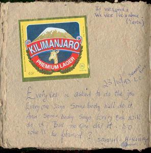

|
|
|
|
Wake up at around 11, and I wrote some diary. Brooke showd up at 12 but I was not ready yet, so I told him to go. I finished doing my things, thenI came out and tried to change some money at the hotel bar. At first they seemed interested in giving me a 8.2birr/$,but then it turned out they didn't ahve enough birr for $20, so I just changed my Ksh, which were not enough to catch the bus. Iwas therefore thinking of changing money at the bank on monday, and then leaving on tuesday. I had lunch with brooke and some dude from the hotel at the restaurant behind the bar I went to last night with Anthony and brooke. There we ate the traditial kitfu with the traditional yiest bread. Of course I paid for their meal. They were not thanking me for the meal so I told brooke that you are supposed to say thank you or show some appreciation if somebody buys you something, and he told me that in Ethipia for foood there is no problem. You don't thank for food. I thought it was kind of strange. he also started talking about some coffee ceremony... I might have to check it out.
After lunch I was ready to change some money, so we tried to see if there was something on the street. But then we got apporached by some dodgey bloke, big and threatning looking. I recon he was trying to make some money off a bribe, in case he caught somebody exchanging money illegally on the street. So I got scared and didn't change anything.
|  |
By this time, we ran into Sami, who was now walking. He walked with us to the hotel bar, where we all had a soda, then we talked a little at the table, he wrote something in the sketchbook, and then the money exchanging came up again. It was true that if I were to wait for the banks, I was going to have to wait another 2 days. So i told Brooke that if we wanted to exchange money on the street, he could. That I was happy with a 8.2/$ rate, and that he could then keep the difference. But he had to do it for me. I gave him $20, then he was off, and Anthony and Sami stayed with me. After a long time, he came back with another dude, who said was going to change, but only in front of me, because he did not trust Brooke. When I heard this I was very scared. Ithought this was a setup again. Butinstead it was OK. I got a 8.3 rate and gave the extra .1/$ to Brooke, as promised, as he started begging for more money. First he asked for money. Then I said that I gave him 150Ksh the night before, so he could use that money, if he hadn't spent it yet. He said he spent it already, so I told him that that was his problem. He shouldn't have. So he decided to ask for the .1birr/$ that he at first was ready to be polite and refuse. I laughed and gave it to him.
They were all off, and I went to my room to rest. i started reading the Asimov book, "I, Robot" upto about 6pm, then I went to the bus station and they gave me a ticket for the next day for 38 birr upto Dila. On my way back I ran into Brooke, who was sitting atthe Tourist Hotel. I stopped in, and he told me that he had ran into these Italian friends, that worked here, he forgto to tell me about. And asked me if I wanted to be taken to them. I sayed "sure" and we got picked up by a car with "EC" stickers on the door. And that's how I met Rudi and Gert.
LVIA is the association they work for here. They get 2 year contracts, do proposals, and then get money for these projects. They get paid about 1.3milion Lira per month and are now overloaded with work. They work with water, drillling for wells, they arebullding a kindergarden, and other stuff. They are nice people, and have hired a team of locals to help them.
I was even more lucky to find out that tonight was party night: an engineer was going to leave, so they were throghing a party for him. Dinner was prepared, two [capre], one prepared according to muslim religion, the other according to the crhistian one. The two religions were a little separated , but just for making things easier, not to segregate.
Here in Ethiopia there are many, many diffrent cultures, so it seems that people are used to living with each other and accepting the different religions. The dinner was OK, and didn't last too long. Then there were the tear-ripping ("strappalacrime"),as Gert defined them, talks of everyone. These are just thank you speeches or little ceremony speeches that they hold for the special occasions. And Geert had to hold hte speech too, as he is the coordinator. He says that he hates these speeched, that he hates publich speaking, and that he thinks they are all useless. But he held one, and he says "Impara l'arte e mettila da parte". In my opinion his speech was very canned, but he knows it, and says it is useless to try to make some speech where one could try to teach something in such a sad moment: people are moved then and there, but then the next day they are the same. I respect his point of view.
So he told me these things while going to his house to pick up the grappa. His house is very nice, with a real toilet seat, that he bought himslef and isntalled. He also has a solar panel in his house, with a truck 12V battery, and a "Helios Technoloy HT8 charge controller" unit. He says he can go literally the whole night with lights on. He has plenty of power. After a little smoke, we went back to the LVIA offices to the party. I had to remind Gert about the grappa, since he was forgetting about it already.
When we got back there, people were dancing and going wild. The engineer was dancing too, in his 60's, and doing very well. He is still a very strong man. Everyone got smashed. After more and more dancing, we decided to go to a bar, for a few minutes, since power was going to go out (Oh, yeah, I haven't told you yet? Here there is power about 12 hours /day, fom noon, until midnight. Then no more power. So all music and bars close.).
The place we went to was a little room, with a bar, and some stools with more small tables. Te room was probably 7-8meters long and had huge blasting speakers. The temperature in there was really high. We had a beer, and I was glad when the power went out, so we could all go outside. And so we walked back to Gert and Rudi's place, and had some more Rum there. Of course they have light because of the solar panels, so showing it and turning it on is a must. Considering that one of these solar panels are about $500, they are totally unthinkable for locals.
I tried to explain about T-Wave alternans to a local technician that works in a store, but that did not go well at all. He was way too drunk. I must say I definetely succeeded more explaining gravity and force to the boys on the boat to Dar, and the next day talking about physics with a bartender and person in Arusha.
Then everyone left. I was left with the italians who I chatted with for a little while longer, then Gert walked me back to the hotel, but nobody would open (it was 2:30am). Se we came back, he put me to sleep in this small room of his outside, next to the high class latrine, and I tried to wake up at 4:10am to go see if I could get into my hotel to get stuff, so I could leve with the 6am but (they wanted me to be at the bus stop at 5am), but also at that time, I could not get in. This time I walked down the Moyale back street alone. It was really shady. Not as shady as it was walking down the main street with Gert. On the main street there is always somebody. Maybe a military guy that could annoy you with questions. When we ran into one, Gert promptly flashed the light on our faces, and told them we were from LVIA, and the guy didn't bother annoying us further.
I now have to wait another day and see if I can talk the bus guys into letting me not pay for another fair again. It was definetely worth it, though. Great party, great people and great experince. The best I had had in a long time.
| Previous | Home | Next |
{kind=link}